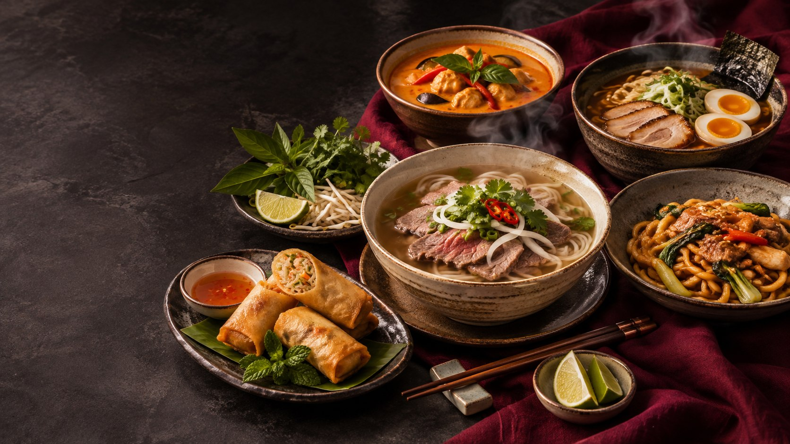
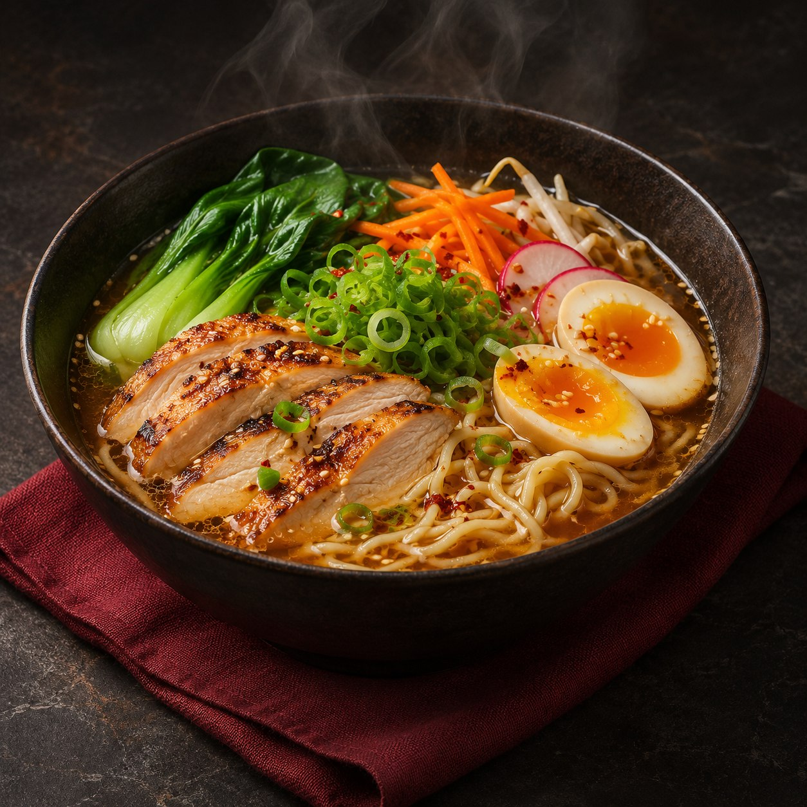
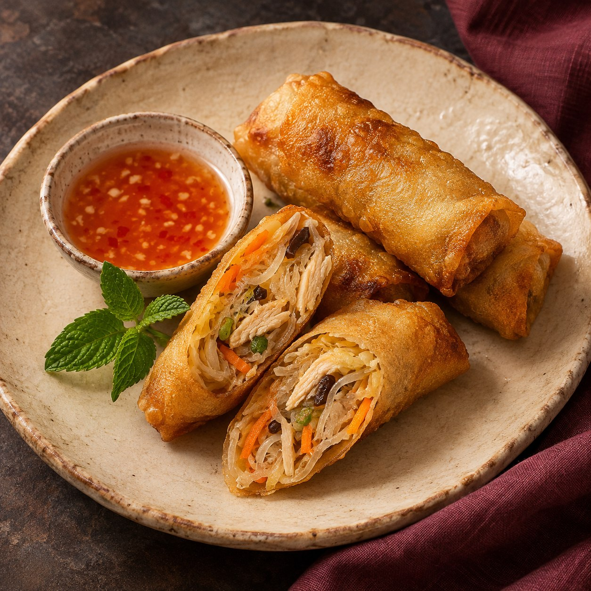
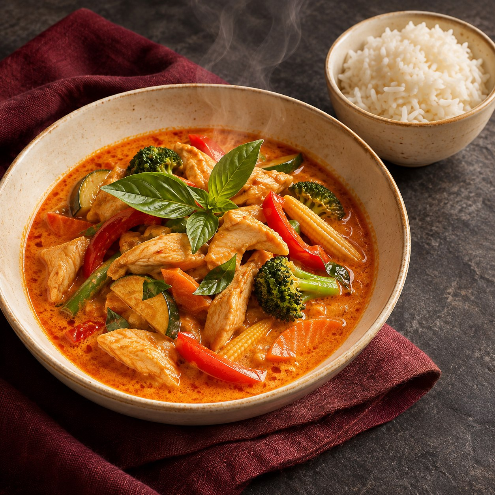
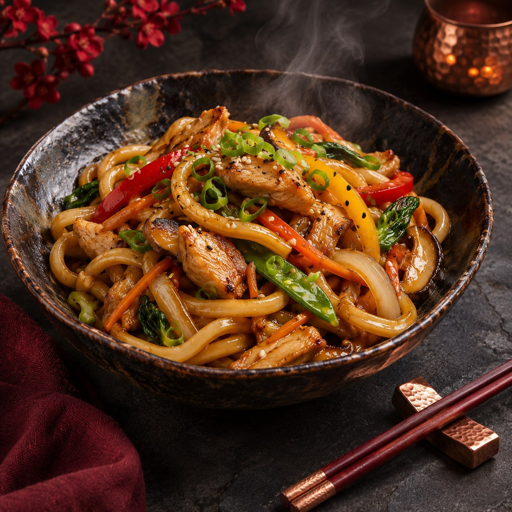

Japanisch · Bestseller
Ramen Chicken
Kräftige Brühe mit Ramen-Nudeln, zartem Hähnchen, mariniertem Ei und knackigem Gemüse.
Kim Son's · Authentische Asiatische Küche
Von aromatischer vietnamesischer Pho über handverlesene Thai-Currys bis zu dampfenden japanischen Ramen. Eine kulinarische Reise durch vier asiatische Esskulturen – täglich frisch zubereitet mit Hingabe.


Ein kleiner Vorgeschmack
Kräftige Brühe mit Ramen-Nudeln, zartem Hähnchen, mariniertem Ei und knackigem Gemüse.

Goldbraun gebacken mit Hühnerfleisch, feinen Glasnudeln, Gemüse und Haus-Dip.

Cremige Kokosmilch, feine Thai-Kräuter, frisches Wok-Gemüse und feine Schärfe.

Saftige japanische Weizennudeln aus dem heißen Wok mit knackigem Marktgemüse.
Vor Ort oder zum Mitnehmen
Ob für eine genussvolle Mittagspause, einen entspannten Abend mit Freunden oder den kulinarischen Moment zu Hause – wir empfangen Sie mit echter asiatischer Gastfreundschaft in der Nürnberger Straße.
Bei uns vorbeischauenIhr Platz bei Kim Son's
Senden Sie uns Ihre Reservierungsanfrage bequem per WhatsApp. Wir prüfen die Verfügbarkeit und bestätigen Ihren Tisch persönlich.
Wunschtermin wählenMontag bis Samstag · 11:30–21:30 Uhr
Anfrage absendenWhatsApp öffnet eine fertig formulierte Nachricht
Bestätigung erhaltenDer Tisch ist nach unserer Rückmeldung reserviert
Kurzfristig oder mehr als 12 Personen? Rufen Sie uns an: 06181 4279277
Bitte füllen Sie alle Pflichtfelder aus.
Besuchen Sie uns
Zentral gelegen in der Nürnberger Straße – ideal erreichbar für Ihr Mittagessen, Abendessen oder Ihre schnelle Abholung.